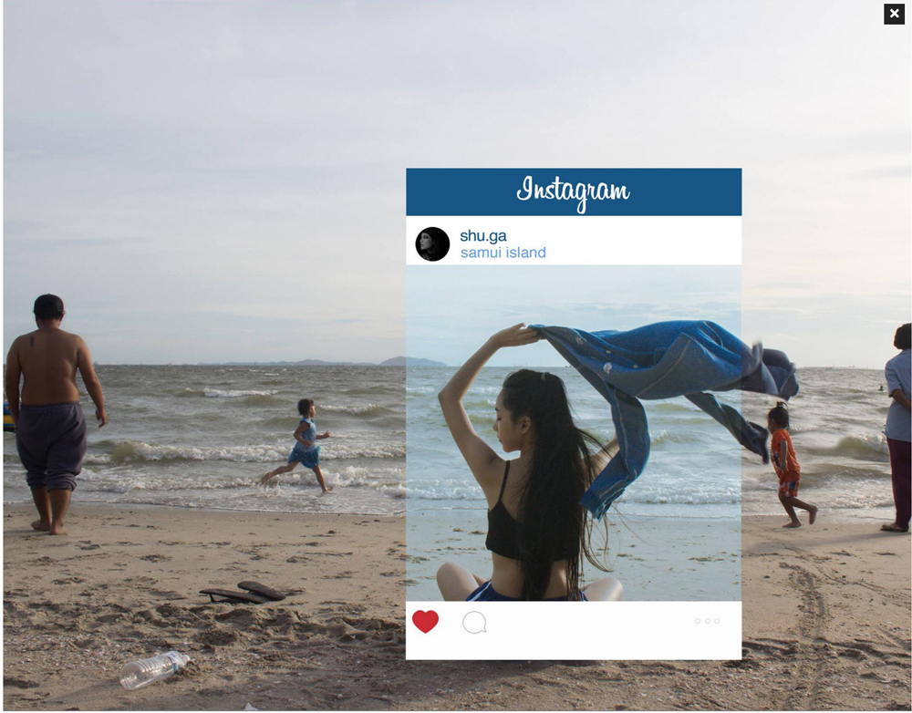
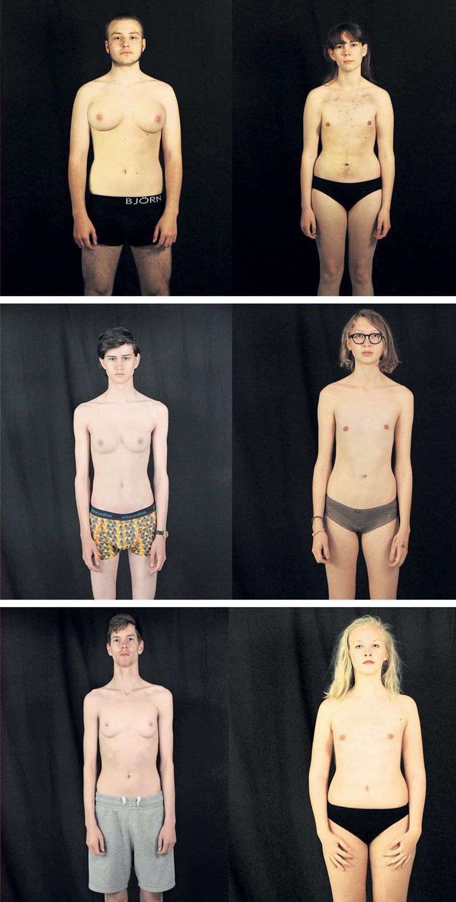

Dansk A
Digital eksamensopgave med adgang til internettet
kl. 09.00-14.00
Dansk
Fortællinger, løgn og manipulation
”Allerede få linjer inde i Bibelen dukker de første løgnehistorier op. »Det ved jeg ikke«, siger Kain, da Gud spørger, hvor Abel er henne. Kain havde netop myrdet sin bror. Menneskene er stadig fulde af løgnehistorier. Vi lyver over for Gud, hinanden og os selv. (…) Når vi fortæller løgne, prøver vi at forme verden, som vi gerne vil have den til at se ud. Vores egen lille verden og den store verden.”
| Kirsten Boas: ”Løgnehistorier fra tidernes morgen”, Kristeligt Dagblad, 6. juli 2002 |
”Vi må lære at skelne. Vi må skelne mellem konstruktioner, illusioner, ideologier, vildfarelser, falske bevidstheder, fejl, usandheder, forstillelser, hvide løgne, sorte løgne, nødløgne, barmhjertige løgne, letfærdige løgne, grove løgne og livsløgne.”
| Arno Victor Nielsen, “Forsvar for løgnen”, Information 8. maj 2014 |
Dette opgavesæt indeholder tekster, der på forskellig vis handler om, hvordan fortællinger kan fordrejes og vinkles – og fortællingers påvirkning af vores forståelse af virkeligheden.Vi lyver, når vi bruger sproget, vinkler verden og gengiver virkeligheden. Når vi lyver med den bevidste hensigt at få andre til at handle, og når vi skjuler vores egentlige hensigter, manipulerer vi. Der er flere måder den kloge kan narre den mindre kloge på. Det har reklamefolk mange års erfaring med. Men vi godtager også løgnen, så længe vi har en kontrakt med afsenderen om, at der er tale om fiktion – når vi fx læser romaner eller ser film. Også i ikke-fiktive genrer griber vi til fiktionens virkemidler. Det kan man kalde at fiktionalisere.
Du skal besvare én af opgaverne 1-4.
Du har 5 timer til at besvare opgaven.
Tilladte hjælpemidler: Alle hjælpemidler, herunder elektroniske.
Bemærk: Materiale hentet fra internettet vurderes i bedømmelsen kun positivt, hvis det bidrager til en kvalitativ forbedring af din besvarelse. Dvs. materialet vurderes i forhold til relevans, målrettethed, tekstpræsentation og evnen til at forholde sig kildekritisk til det fundne materiale.
Overordnede bedømmelseskriterier:
Din besvarelse vil blive bedømt ud fra en helhedsbetragtning. Det er således både form og indhold, der indgår i vurderingen. Ved helhedsbedømmelse er der tale om et samspil, hvori der indgår en række indholdsmæssige og formidlingsmæssige delaspekter:
|
- emnedækning - disponering - brug af tekstmateriale - selvstændighed - abstraktionsniveau - sproglig og grammatisk kompetence |
I opgaveformuleringerne bruges det udvidede tekstbegreb. Dvs. at ordet ”tekst” også henviser til billedmateriale og filmklip.
Det materiale, som skal bruges til at besvare opgaverne, findes dels i teksthæftet og dels på cd-rommen. På cd-rommen findes teksterne så vidt muligt i deres originale layout. Eventuelle meningsforstyrrende fejl i det originale layout på cd-rommen er rettet i papirudgaven.
Forside: Chompoo Baritone: Fotografi, 2015
Bagside: Emil Bergløv: ”Facebook fjernede efterskolepiger med mandebryster af hensyn til det globale publikum”, manipulerede fotografier, (fra) artikel, Politiken, 3. juni 2015
Forside
|  |
Bagside
|  |
Tekster til emnet
Tekst 1
Anne Kirstine Cramon: ”’Kemoland’ – en løgnehistorie”
Kronik, Politiken, 13. juli 2015
Tekst 2
Jakob Dybro Johansen: ”E-mail fra Gadaffis enke”
Artikel, Politiken, 13. oktober 2013
Tekst 3
Klaus Kjøller: ”Sådan manipulerer du”
Artikel, RetorikMagasinet, december 2010
Tekst 4
Jan Sonnergaard: Frysende våde vejbaner (uddrag fra kap. 1)
Roman, 2015
Tekst 5
Bag om Kemoland-dagbogen (uddrag)
Dokumentar, DR2, 13. oktober 2015
Tekst 6
Detektor (uddrag)
TV-magasin, DR2, 22. oktober 2015
Tekst 7
Fuckr med dn hjrne (uddrag)
TV-magasin, DR3, 1. september 2014
Tekst 8
Spies Rejser: DO IT FOR MOM (Do it for Denmark 2)
Reklamefilm 2015
Opgaver til emnet
| 1. |
Redegør for og diskutér hovedsynspunkter og centrale begreber i ”’Kemoland’ – en løgnehistorie” (tekst 1). I diskussionen skal du inddrage Bag om Kemoland-dagbogen (tekst 5), samt en tekst du selv finder i opgavesættet eller på internettet.
Overskrift: En løgnehistorie Din besvarelse vil blive bedømt ud fra din evne til at:
|
||||
| 2. |
Analysér og fortolk Frysende våde vejbaner (tekst 4) med særligt fokus på forholdet mellem fortælling, sandhed og løgn. Perspektivér til opgavesættets overordnede emne. I perspektiveringen skal du inddrage mindst én tekst, som du selv finder på internettet eller i opgavesættet.
Overskrift: Frysende våde vejbaner Din besvarelse vil blive bedømt ud fra din evne til at:
|
||||
| 3. |
Denne opgave er todelt.
Vedr. A: Denne del udgør den primære del af din besvarelse. Din besvarelse vil blive bedømt ud fra din evne til at:
Vedr. B: Din besvarelse vil blive bedømt ud fra din evne til at:
| ||||
| 4. |
Lav en kommunikationsanalyse af DO IT FOR MOM (Do it for Denmark 2) (tekst 8) med særligt fokus på forholdet mellem indhold og form. Perspektivér til opgavesættets overordnede emne.
Overskrift: Do it for mom Din analyse og fortolkning vil blive bedømt ud fra din evne til at:
|